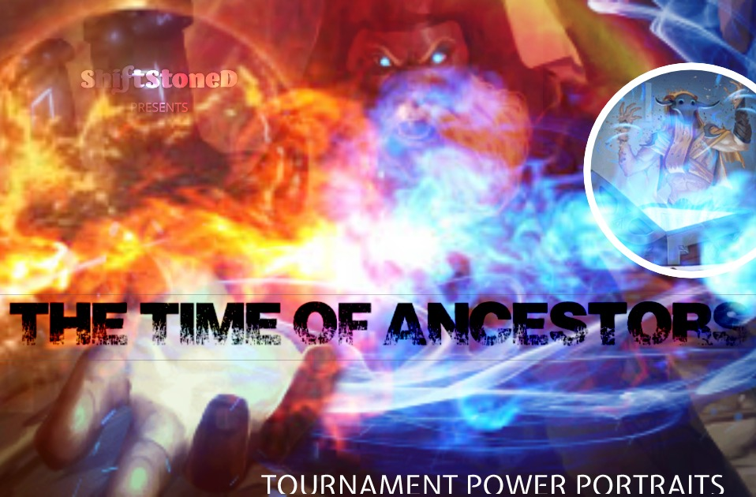
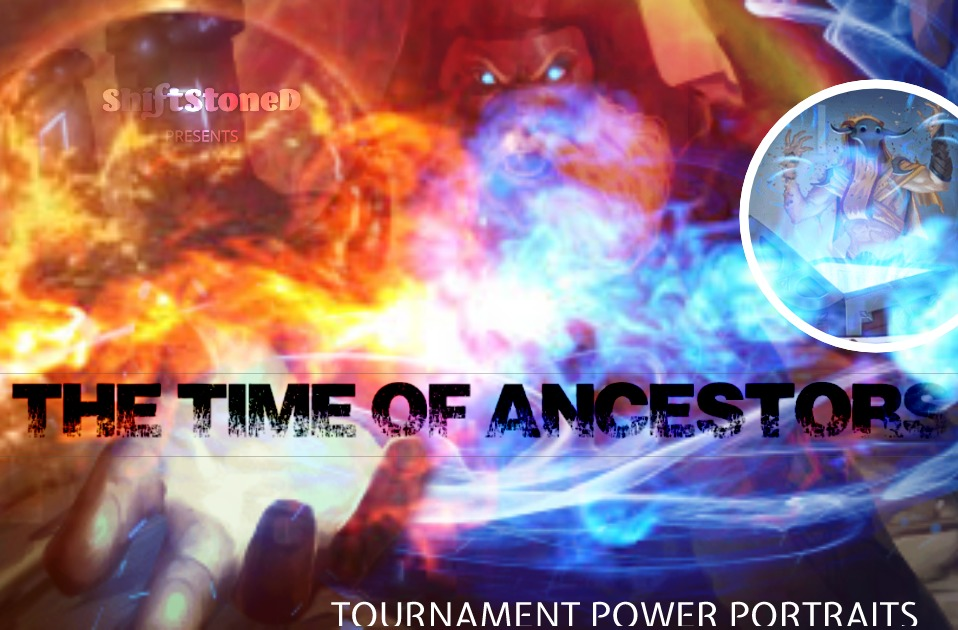

The Time of Ancestors: ECQ Rundown
Taking a look at the Top Eight decks from The Time of Ancestors, the first official 2020 Championship Qualifier for Eternal Card Game
Power portraits and standout features for each the finalists


 

November 18, 2019 - The first Eternal Chapionship Qualifier event of the 2020 season has concluded, with Xenan Cultists emerging victorious despite having a target painted on their backs. Nahid's Faithful and friends composed an overwhelming sixty percent of the field, with a proportionate share of the Top 8.
The remaining non-Cultist lists in the event appeared custom-built to counter this boogeyman of the format. However — while a single archetype was predominant — no two builds among the finishers were the same. Here we take a look at the construction of the winning decks, highlighting the shared traits and standout features of each.
1st P L A C E:
►
BruisedByGod's Deck (Xenan Cultists)
Seek Power Gaming's BruisedByGod returns in style to the competitive spotlight of Eternal following a hiatus. Like all of the Xenan Cultist decks seen here, BBG's first-place build features a full playset of High Prophet of Sol (2 ) along with an Ark of Sol (1) in the Market.
) along with an Ark of Sol (1) in the Market.
What distinguishes the Power sourcing in this list from the others is a full set of Vara's Favor (2 ). BBG also chooses to go with four of Emblem of Makkar, but forgoes Emblem of Grodov in favor of eight Time Sigils — more than any other deck seen here.
). BBG also chooses to go with four of Emblem of Makkar, but forgoes Emblem of Grodov in favor of eight Time Sigils — more than any other deck seen here.
Standout feature: BBG's version of Xenan Cultists was the only one of the finishers to include a Swirl the Sands (3) in the Market, which proved to be relevant in at least on matchup during the semi-finals.
view deck ►
2nd P L A C E:
►
AntMan's Deck (Hooru Vanguard)
Perhaps the most innovative list among the finishers, AntMan's Hooru deck appears to be built specifically with the intention of putting Xenan Cultists in the crosshairs. Among other things, Curse based removal deftly dodges Nahid's Choice. The Exalted / Renown / Weapon synergies along with the inclusion of rarely seen Units such as Jarral's Frostkin (4 ) and Imperial Loyalist (4
) and Imperial Loyalist (4 ) make this deck particularly spicy.
) make this deck particularly spicy.
Standout feature: The only deck here to feature Coins of any kind, in this case Emerald Coins. Although these Power sources come in Delpleted, having a couple of extra +1/+1 Spiked Helms around certainly makes up for it in a deck that wants to speed up the Mastery thresholds for Varret, Hero-in-Training (2) and Blitrok, Linrei's Listener (4) — not to mention the Weapon synergies from Units such as Axe Sharpener (2), Imperial Loyalist (4).
view deck ►
3rd P L A C E:
►
Thalian's Deck (Hooru Tempo)
Fast Hooru builds have often been touted as an antidote to Cultists and that proved mostly true for Thalian with this list. Although the curve appears to jump from 4 to 7 Power, Xulta Loyalist (7) wants to be played for 3 Power and Shifted - so realistically this deck plays low to the ground and tops out with Daring Gryffyn (4PP).
Standout feature: A Soulflame Rider(9) in the Market may seem risky with exactly zero Spells or Units boasting the Decimate tag, but a total of seven Emblems ensure that the 9-cost Paladin Gryffyn can reliably be played for less than full price or even for free under the right circumstances.
view deck ►
►
camat0's Deck (Xenan Cultists)
One of only two lists to include every available Emblem, camat0's deck is also the only Xenan Cultist build to feature Fenris Nightshade (2) for additional card draw. Three of the finsishers chose to include Edict of Grodov (3) — a useful tool in the mirror match — but Camat0's list is the only one to include a full set.
Standout feature: When Fenris is not enough, this list looks for even more draws from a Vault of the Praxis (4) in the Market, taking advantage of low cost units and tokens which may be played on in multiples on a single turn.
view deck ►
5th P L A C E:
►
xSTEALTHx's (Kerendon Control)
Attacking Cultists from a different direction, xSTEALTHx's deck plays many of the same Shadow threats that Xenan does —including Incarnus, Karvet and Vara — but hopes to outgrind two-color decks with access to powerful removal tools available only to Justice. Shen-Ra Speaks (5) is the Expedition format's most powerful sweeper, while Cast Into Shadow (3J) can also take out multiple targets at once.
Standout feature: The only three faction deck in the Top 8, xSTEALTHx's list appropriately includes more Power sources than any other — including four of Seek Power (1) and two Lost Scrolls (2) — to reliably play Shen-Ra Speaks on curve. The Lingering Influence (1) of Rolant surrounding the Regent's Tomb (4) also helps xSTEALTHx to hit their Power and Influence targets.
view deck ►
►
Bardeane's Deck (Xenan Cultists)
One of two finsishers to include a full regiment of Emblems in both colors, Bardeane's list is the only one to feature a full set of Scorpion Wasps (3) in the main deck.
Standout feature: More Shadow removal can be found in the Market — including both Edict of Makkar (1) and Fell Ritual (4).
view deck ►
►
Sunyveil's Deck (Xenan Cultists)
Sunyveil's take on Cultists lowers the curve slightly by unexpectedly relegating Shadow powerhouse Karvet, Solar Dragon (6) to the Market insted of the main deck.
Standout feature: The only list to feature Talir's Favored (2) for additional Time sources.
view deck ►
►
LimFactor's Deck (Xenan Cultists)
In contrast, this Cultist build raises the curve —being the only one of the finishing lists to include Vara, Fate-touched (8) in the main deck. Accordingly LimFactor prioritizes Shadow over Time sources, with 10 Shadow Sigils in the Power base and three of Vara's Favor (2).
Standout feature: Big Vara in the main deck frees up room for Slimespitter Slug (6), a powerful threat to enemy fliers as well as a source of life gain.
view deck ►
The Expedition format has changed with the recent introduction of cards from Dead Reckoning and Trials of Grodov. Will Cultists continue to dominate in the days ahed, or will a new challenger emerge?